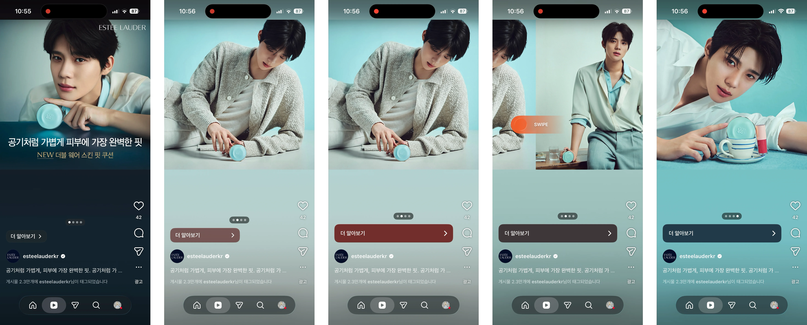
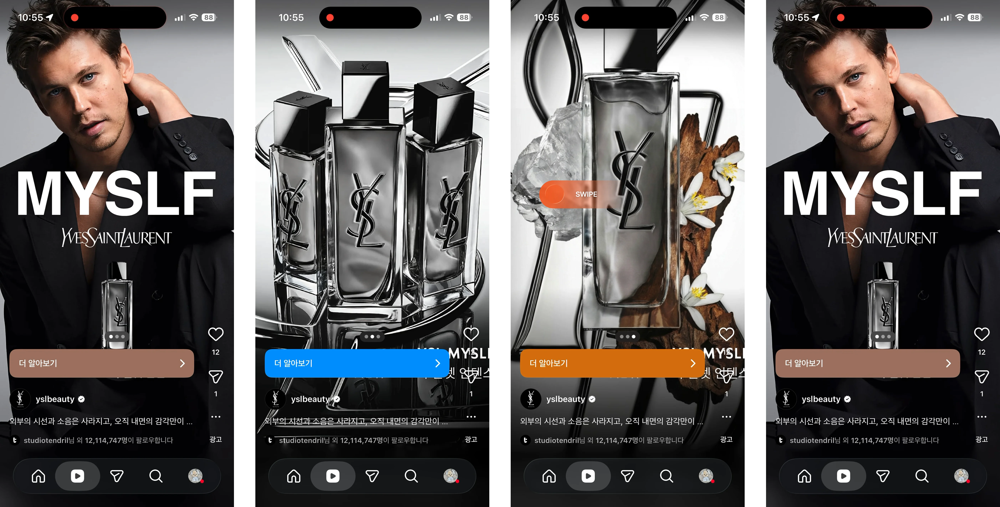

DA ideation / Research / 오토 슬라이드 광고
전면형 · Auto-Sliding Carousel
오토 슬라이드 광고
1~1.5초 간격으로 자동 전환되며 하나의 스토리처럼 브랜드 메시지를 전달(Advantage+ Creative / Creative Enhancement 자동 효과로 추정).
Case A. 1:1 정사각형 소재
사용자 플로우

이미지를 클릭하면 확대해서 볼 수 있습니다.
플로우 디스크립션
1
1:1 정사각형 이미지 소재 최대 4장으로 구성된 캐러셀 노출, 세로 피드 화면 안에서 상하 레터박스와 함께 표시
2
별도 스와이프 없이 1~1.5초 간격으로 다음 슬라이드로 자동 전환
3
슬라이드가 바뀔 때마다 하단 '더 알아보기' CTA 버튼의 배경색이 함께 자동으로 바뀌고, 상단 pagination 점도 동기화되어 이동
4
마지막 슬라이드에서 자동 전환이 멈추고 정지, 이후에는 사용자가 수동으로 스와이프해 탐색 가능
샘플 영상
영상을 클릭하면 확대해서 볼 수 있습니다 (좌하단 버튼으로 일시정지·재생 가능)
Case B. 9:16 세로형 소재
사용자 플로우

이미지를 클릭하면 확대해서 볼 수 있습니다.
플로우 디스크립션
1
9:16 세로형 이미지 소재로 구성된 캐러셀 노출, 레터박스 없이 화면 전체를 꽉 채우는 풀스크린 형태
2
Case A(1:1)와 동일한 인터랙션 — 1~1.5초 간격 자동 전환, CTA 컬러·pagination 동기화
3
마지막 슬라이드에서 자동 정지, 이후 수동 스와이프로 탐색 가능
샘플 영상
샘플 영상 준비 중
영상 등록 후 자동재생·음소거(autoplay, muted, loop)로 자동 전환될 예정
카카오 지면 적용 포인트
적용 가능 지면
지금탭 숏폼 / 프로필 풀뷰 등 유사한 소비 패턴을 가진 카카오 지면에 적용을 검토할 수 있습니다.
고려 사항
몰입형 전면 광고의 이탈률과 체류시간 트레이드오프 검증 필요.
참고
출처 · 내부 아젠다별 벤치마킹 보드 (Figma, 0805) — 섹션 3 · 지금탭 > 숏폼, 프로필 풀뷰
벤치마킹 소스 · Meta (Facebook/Instagram) · 지면 · 지금탭 숏폼 / 프로필 풀뷰 · 검토 상태 · 리서치 완료 · 샘플 영상 · 미업로드